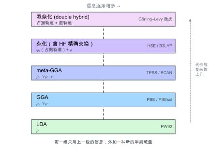

交换关联泛函
Kohn–Sham DFT 里唯一需要近似的量是交换关联泛函；这一条讲各级近似分别用了哪些信息、丢掉了什么、代价多大，以及什么时候必须往上一级走。
直观阅读需要
- Kohn–Sham 密度泛函理论：把多电子问题变成单电子方程
- Hartree–Fock 方法：精确交换是什么
完整推导还需要
- Kohn–Sham 密度泛函理论：交换关联势 v_{xc} 的来源
- 均匀电子气与梯度展开
只是提示，不需要先读完才能往下看。
直觉直观解释
Kohn–Sham DFT 把多电子问题精确地变成了单电子方程，代价是出现一个未知量：交换关联泛函 E_{xc}[n]。它包含了交换（泡利不相容）和关联（电子之间的动态躲避）两部分，加上动能中“非相互作用部分”之外的那一块。这一类方法的全部近似都在这里。
泛函按“用了多少局域信息”排成一级级台阶，通常叫雅各布阶梯 (Jacob's ladder)：
- 只用一个点的密度 n(\mathbf{r})；
- 再加密度梯度 \nabla n；
- 再加动能密度 \tau（或者密度的拉普拉斯）；
- 再加占据轨道 \psi_i（精确交换）；
- 再加虚轨道。
每一级都比上一级多知道一点信息，一般也更准一点，但计算代价和实现复杂度上升。图里把这几级排出来。

| 级别 | 用到的量 | 代表方法 | 在 Kohn–Sham 框架里的代价 |
|---|---|---|---|
| LDA | n(\mathbf{r}) | PW92 关联 | 与 PBE 同级，最便宜 |
| GGA | n,\ \nabla n | PBE、PBEsol | 与 LDA 同级 |
| meta-GGA | n,\ \nabla n,\ \tau | TPSS、SCAN | 略高，需要动能密度 |
| 杂化 | 上式 + 占据轨道 \psi_i | HSE、B3LYP | 需要计算精确交换，明显更贵 |
| 双杂化 | 上式 + 虚轨道 | 各类双杂化 | 最贵，接近 MP2 的量级 |
定义与公式数学与推导
总能量的分解
其中 T_s 是非相互作用体系的动能；v_{\mathrm{ext}} 是外势（原子核）；E_H 是 Hartree（经典静电）能；E_{xc} 是交换关联能。前三项都是精确已知的，E_{xc} 必须近似。
LDA 与 GGA
GGA 再引入约化梯度 s = |\nabla n|/(2k_F n)，写成“LDA × 增强因子”的形式。PBE 的具体函数形式见 PBE 泛函与广义梯度近似；PBEsol 是同一形式下换参数的变体，为固体优化 [PBE 1996]。
meta-GGA：加入动能密度
其中 \tau 是 Kohn–Sham 轨道的动能密度；\psi_i 是占据轨道。
TPSS 是第一支不拟合实验、只满足精确条件的 meta-GGA [Tao et al. 2003 (TPSS)]。SCAN 满足一组更强的约束（17 条精确条件），在分子与固体上表现更均衡，但也更容易出现数值上的“过度结构化”，需要更细的网格 [Sun et al. 2015 (SCAN)]。
杂化：掺入精确交换
其中 a 是精确交换的比例；E_x^{\mathrm{HF}} 是用 Kohn–Sham 轨道算的 Hartree–Fock 交换；E_x^{\mathrm{DFT}}、E_c^{\mathrm{DFT}} 是半局域部分。
- B3LYP 用三个参数（a=0.20）配合 B88 交换与 LYP 关联 [Becke 1993 (B3LYP)]，在分子化学里长期是默认选择。
- 全局杂化在固体里会遇到问题：精确交换是长程的，在周期性体系里计算与收敛都困难。HSE 把精确交换屏蔽到短程，长程仍用 GGA，因此在半导体与绝缘体里可用且开销可控 [Heyd et al. 2003 (HSE)]。
两类系统误差
- 自相互作用误差 (self-interaction error)：在精确理论里一个电子不应与自己的电荷感生势相互作用；半局域泛函里这一项没有完全抵消，导致电子过度离域、能隙偏小、电荷转移能偏小。
- 离域误差 (delocalization error) 与静态关联：强关联或接近简并的体系（过渡金属化合物、某些缺陷）用单参考的 Kohn–Sham 方法本身就不够。
GGA 与 meta-GGA 主要缓解第一类，杂化再加一点精确交换进一步缓解；第二类通常需要别的框架（DFT+U、DMFT、多参考方法）。
在本研究线里的样子对应与边界
压电与响应计算
- 压电张量 d_{ij} 由弹性柔度与内坐标响应（玻恩有效电荷）组合而成（见 压电张量、介电张量与玻恩有效电荷、弹性张量）。实验值常在实验晶胞上测得，DFT 报告的常是优化晶胞上的值，比较时要说清是哪种。
- 泛函影响平衡晶胞，晶胞又影响 d_{ij}。对 β-甘氨酸这类以氢键与范德华堆积为主的晶体，泛函不加色散会给出过大的晶胞（见 色散校正）。
- 杂化泛函是否必要：对绝缘体，带隙低估一般不影响定性结论，但会影响电子介电常数；需要和实验的介电常数比较时，应先检查 PBE 的偏差有多大，再决定要不要上杂化。
分子晶体与结构预测
多晶型间的能量差很小，泛函选择直接影响排序。不同泛函加不同色散校正可能给出不同的稳定性顺序，这种差异本身就是需要报告的信息，而不是需要“选一个”的问题（见 预测的误差来自哪里、能量景观与多晶型）。
常见坑对应与边界
- 把“泛函更高级”当成“一定更准”：对某类性质（例如固体晶格常数）PBEsol 常优于 PBE，但 PBE 对分子结合能更好；没有全局最优。
- meta-GGA 用粗网格：\tau 对网格敏感，SCAN 在粗 k 点网格或大间距实空间网格上可能出现数值噪声。
- 杂化泛函的屏蔽参数混用：HSE03 与 HSE06 的屏蔽参数不同，混用会让结果无法复现。
- 忽略色散：任何半局域泛函都不含长程关联，分子晶体、层状材料、吸附问题必须额外加色散修正。
- 换泛函不换赝势：POTCAR 是针对特定泛函生成的，例如用 PBE 的 PAW 数据集去配 SCAN 计算，严格来说不一致。
检验自己对应与边界
子条目
- PBE 泛函与广义梯度近似PBE 交换增强因子的形式、参数从哪里来、典型误差倾向，以及为什么分子晶体要加色散修正。
参考资料
论文Perdew & Wang 1992
尚未实际查阅，目前只是拟查阅书目
论文PBE 1996
尚未实际查阅，目前只是拟查阅书目
论文Tao et al. 2003 (TPSS)
尚未实际查阅，目前只是拟查阅书目
论文Sun et al. 2015 (SCAN)
尚未实际查阅，目前只是拟查阅书目
论文Heyd et al. 2003 (HSE)
尚未实际查阅，目前只是拟查阅书目
论文Becke 1993 (B3LYP)
尚未实际查阅，目前只是拟查阅书目
论文Burke 2012
K. Burke, Perspective on density functional theory, J. Chem. Phys. 136, 150901 (2012)
尚未实际查阅，目前只是拟查阅书目
分类电子结构理论 · 概念 · 研究线：压电与响应计算、结构预测与能量景观 · 状态：草稿